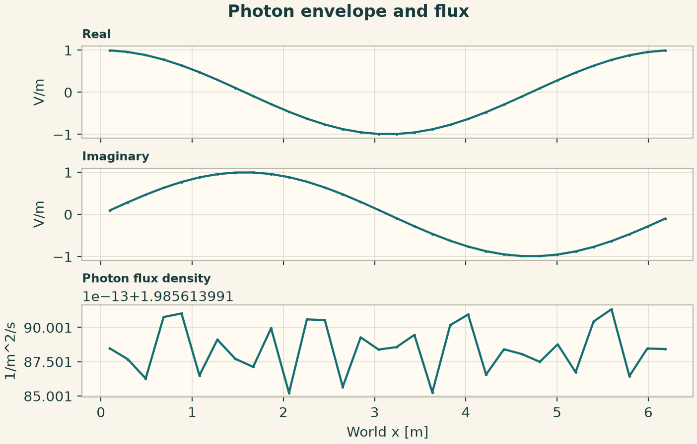
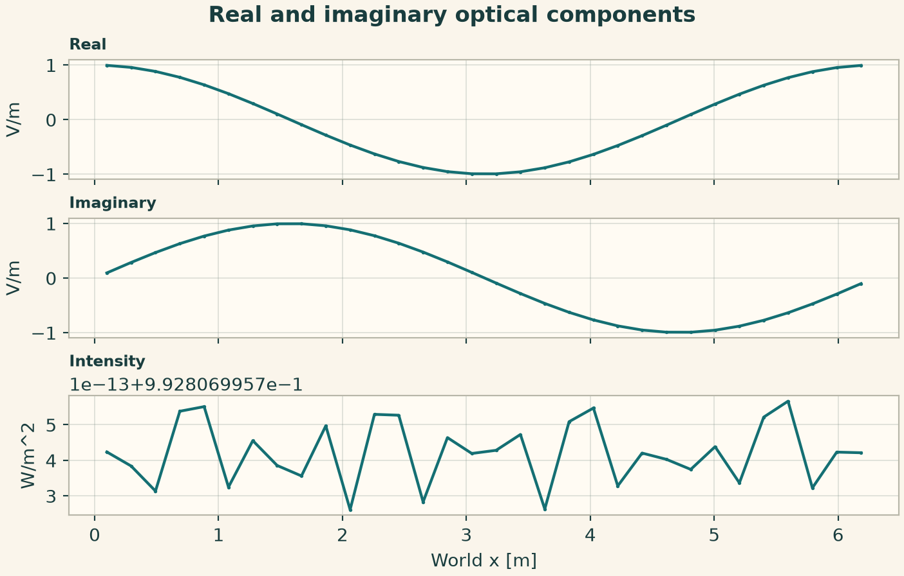
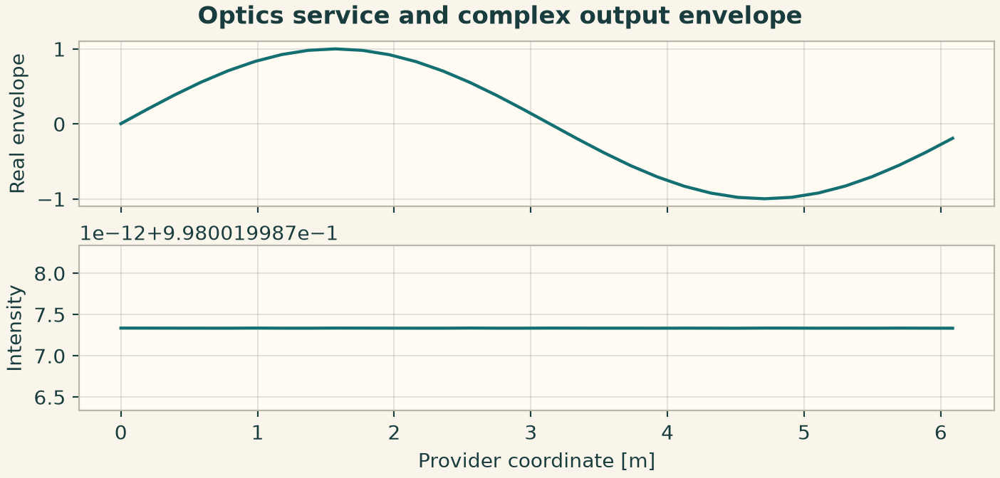
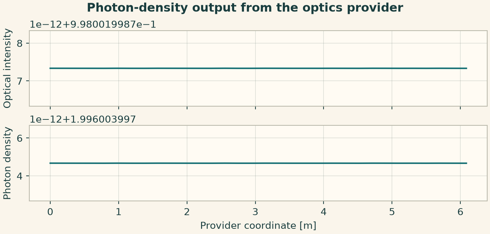

Docs › Worked physics and service recipes › Optics and photonics recipes
6.16 Optics and photonics recipes
This section includes the field-based declarations and the independently callable optics and photonics service configurations. The configuration keys in the service recipes belong to the indicated provider.
6.16.1 Optical amplitude and photon observables
Initialize both real components of the envelope. The photon energy converts optical intensity into photon flux, while group speed converts flux into density.
from onesim.physics.optics import PhotonEnvelope
line = Line(start=(0, 0, 0), end=(2 * np.pi, 0, 0))
model = PhotonEnvelope(
domain=line.line,
wavenumber=2.0,
group_speed=1.0,
permittivity=2.0,
photon_energy=0.5,
absorption=0.1,
)
result = line_experiment(
line,
model,
dict(real=lambda x: np.cos(x), imaginary=lambda x: np.sin(x)),
FiniteVolume(diffusion=TwoPointDiffusion()),
cells=32,
end=0.02,
dt=0.005,
implicit=True,
)
flux = result.field(model.field("photon_flux_density")).values
density = result.field(model.field("photon_density")).values
np.testing.assert_allclose(flux, model.group_speed * density)
fig = profile_figure(
"Photon envelope and flux",
result,
model,
("real", "imaginary", "photon_flux_density"),
)
plt.show()

6.16.2 Real and imaginary components of a paraxial envelope
The two-real-field form stores phase through a pair of components. Recombine them only for plotting or comparison. Intensity is available directly from the model.
from onesim.physics.optics import ParaxialEnvelope
line = Line(start=(0, 0, 0), end=(2 * np.pi, 0, 0))
model = ParaxialEnvelope(
domain=line.line,
wavenumber=2.0,
group_speed=1.0,
permittivity=2.0,
absorption=0.1,
)
result = line_experiment(
line,
model,
dict(real=lambda x: np.cos(x), imaginary=lambda x: np.sin(x)),
FiniteVolume(diffusion=TwoPointDiffusion()),
cells=32,
end=0.02,
dt=0.005,
implicit=True,
)
a = result.field(model.field("real")).values
b = result.field(model.field("imaginary")).values
np.testing.assert_allclose(
result.field(model.field("intensity")).values, a * a + b * b
)
fig = profile_figure(
"Real and imaginary optical components",
result,
model,
("real", "imaginary", "intensity"),
)
plt.show()

6.16.3 Optics service and complex output envelope
Supply the real and imaginary initial arrays, a wavenumber and a propagation distance. Plot the real part, magnitude and intensity from the returned complex envelope.
from onesim.physics.optics import OpticsConfiguration, OpticsPublicApi
n = 32
x0 = np.linspace(0, 1, n, endpoint=False)
wave = np.sin(2 * np.pi * x0)
configuration = OpticsConfiguration(
parameters=dict(
cell_count=n,
initial_real=wave,
initial_imaginary=np.cos(2 * np.pi * x0),
absorption=0.1,
wavenumber=2,
propagation_distance=0.01,
step_size=0.0001,
)
)
result = run_service(OpticsPublicApi(), configuration)
fig = service_figure(
"Optics service and complex output envelope",
result.coordinates,
"Provider coordinate [m]",
("Real envelope", result.envelope.real),
("Intensity", result.intensity),
)
plt.show()

6.16.4 Photon-density output from the optics provider
Supply the same optical inputs plus photon energy. The optical result and photon density share a coordinate array.
from onesim.physics.optics import PhotonicsConfiguration, PhotonicsPublicApi
n = 32
x0 = np.linspace(0, 1, n, endpoint=False)
wave = np.sin(2 * np.pi * x0)
configuration = PhotonicsConfiguration(
parameters=dict(
cell_count=n,
initial_real=wave,
initial_imaginary=np.cos(2 * np.pi * x0),
absorption=0.1,
wavenumber=2,
propagation_distance=0.01,
step_size=0.0001,
photon_energy=0.5,
)
)
result = run_service(PhotonicsPublicApi(), configuration)
fig = service_figure(
"Photon-density output from the optics provider",
result.coordinates,
"Provider coordinate [m]",
("Optical intensity", result.optics_result.intensity),
("Photon density", result.photon_density),
)
plt.show()
